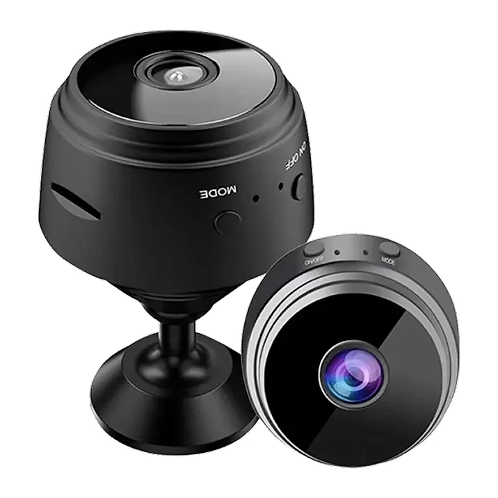
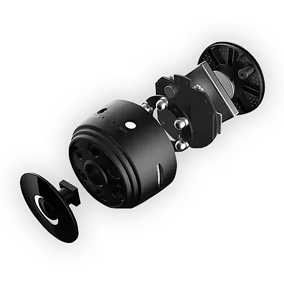

Was ist Guardian Monitor und wie funktioniert es?
Guardian Monitor ist eine kleine WLAN-Überwachungskamera für das eigene Zuhause. Laut der offiziellen Website ist sie kleiner als ein Golfball, sitzt auf einem magnetischen Kugelhalter und überträgt ein Bild in 1080p Full HD über eine App live auf das Smartphone, egal ob Sie im Büro, beim Einkaufen oder im Urlaub sind.
Das zentrale Verkaufsargument ist, dass keine monatlichen Gebühren anfallen. Aufnahmen werden auf einer Micro-SD-Karte in der Kamera gespeichert, ein Cloud- oder Überwachungsabo ist laut Hersteller nicht nötig. Sie zahlen einmal für die Kamera, ohne Vertrag und ohne Monteur.
Für die Dunkelheit hat die Kamera Infrarot-LEDs, die bei wenig Licht automatisch umschalten und laut Website auf rund zehn Metern ein brauchbares Bild liefern; Nachtaufnahmen erscheinen in Schwarz-Weiß. Dazu kommen ein Weitwinkelobjektiv, eine Bewegungserkennung und ein fest eingebauter Akku, der über USB geladen wird. Die Kamera kann laut Hersteller auch dauerhaft angeschlossen betrieben werden.
Als typische Einsatzbereiche nennt die Website Pakete vor der Haustür, Haustiere, die tagsüber allein sind, Reinigungskräfte oder Handwerker mit Schlüssel und dunkle Räume oder Einfahrten. Die App gibt es für iOS und Android. Laut Website lässt sich die Kamera in Sekunden an einen anderen Platz versetzen, etwa vom Eingang ins Kinderzimmer oder vom Flur auf die Terrasse. Viele Käufer nehmen nach Angaben des Herstellers zwei Kameras, um etwa Vorder- und Rückseite gleichzeitig im Blick zu haben.
Positiv fällt auf, dass die Website ehrlich auf Grenzen hinweist: Guardian Monitor ist kein überwachter Alarmdienst und verständigt keine Notdienste, die Leistung hängt von WLAN, Platzierung und Einstellungen ab, und die Nachtsicht-Reichweite ist ein Richtwert. Außerdem erinnert der Hersteller daran, dass Menschen nicht ohne Einwilligung aufgenommen werden dürfen.
Guardian Monitor Funktionen
Laut der offiziellen Website bietet Guardian Monitor:
Video: 1080p Full HD mit Weitwinkelobjektiv, Live-Ansicht in der App.
Nachtsicht: Infrarot, automatische Umschaltung, Reichweite etwa 10 Meter.
Speicher: Micro-SD-Steckplatz für lokale Aufnahmen, kein Cloud-Abo nötig.
Bewegungserkennung: die Kamera reagiert, sobald sich etwas im Bild bewegt.
Stromversorgung: eingebauter Akku, Laden über USB, auch angeschlossen nutzbar.
Montage: magnetischer Kugelhalter, drehbarer Kopf, haftet an Metall oder am mitgelieferten Halter.
Kompatibilität: App für iPhone und Android, WLAN erforderlich.
Die Website betont, dass weder Vertrag noch Monteur oder Genehmigung nötig sind. Angaben zur Akkulaufzeit in Stunden, zur maximalen Größe der Speicherkarte oder zum WLAN-Frequenzband macht sie nicht; die Laufzeit hängt laut Hersteller davon ab, wie viel live gestreamt und aufgezeichnet wird.
Im Vergleich mit einer verkabelten Videoanlage, einer Video-Türklingel und einem alten Handy als Daueraufnahme hebt die Website vier Punkte hervor: keine laufenden Monatskosten, keine Montage, die Möglichkeit, die Kamera jederzeit umzustellen, und die Infrarot-Nachtsicht. Der Hersteller schreibt selbst, dass dieser Kategorievergleich allgemein gehalten ist und Funktionen von Modell und Netzbedingungen abhängen. Auf den Produktbildern ist die Kamera schwarz mit einem silbernen Ring um das Objektiv, Tasten für Modus und Strom und einem runden Standfuß.
Guardian Monitor Anwendung
Die offizielle Website beschreibt die Einrichtung in drei Schritten. Erstens: Kamera vor dem ersten Einsatz über USB aufladen und mit der seitlichen Taste einschalten. Zweitens: die passende App auf dem Smartphone installieren und der WLAN-Kopplung auf dem Bildschirm folgen. Drittens: die Kamera auf den Magnethalter setzen, das Objektiv ausrichten und das Live-Bild prüfen.
Für Aufnahmen legen Sie eine Micro-SD-Karte ein. Wie viel Material gespeichert bleibt, hängt von der Kapazität der Karte ab. Die Live-Bildqualität hängt zusätzlich vom WLAN-Signal am Aufstellort ab; stellen Sie die Kamera daher nicht zu weit vom Router entfernt auf.
Wichtig sind die rechtlichen Hinweise, die auch die Website nennt. Das eigene Grundstück und die eigene Wohnung zu überwachen ist in der Regel zulässig. Andere Menschen ohne ihr Wissen aufzunehmen, öffentliche Gehwege oder Nachbargrundstücke zu filmen oder Kameras in Bädern, Umkleiden oder fremden Schlafzimmern anzubringen, kann rechtswidrig sein. Informieren Sie Reinigungskräfte, Betreuer oder Gäste, wenn eine Kamera läuft.
Laden Sie den Akku regelmäßig auf oder betreiben Sie die Kamera dauerhaft am USB-Netzteil, wenn sie lange laufen soll. Prüfen Sie nach der Einrichtung in der App, ob die Bewegungsmeldungen wie gewünscht eintreffen, und passen Sie bei Bedarf die Empfindlichkeit an, damit nicht jede vorbeifahrende Katze eine Meldung auslöst.
Guardian Monitor – Rückerstattung
Laut der offiziellen Website gilt für jede Bestellung eine 30-tägige Geld-zurück-Garantie. Unabhängig davon steht Verbrauchern das gesetzliche Widerrufsrecht von 14 Tagen zu, worauf die Website ausdrücklich hinweist. Voraussetzungen und Ablauf beschreiben die verlinkten Rückgabe- und Erstattungsbedingungen, die Sie vor der Bestellung lesen sollten.
Nach der Rückgaberichtlinie des Verkäufers wenden Sie sich zuerst an den Kundenservice per E-Mail; es gibt eine eigene Adresse für deutschsprachige Kundinnen und Kunden. Die Ware muss sich im Originalzustand befinden, mit Originalverpackung und sicher verpackt, und wird an die Adresse geschickt, die der Kundenservice nennt. Für die Erstattung braucht der Verkäufer die Sendungsnummer der Rücksendung. Entfernen Sie vor dem Rückversand Ihre Speicherkarte mit den Aufnahmen.
Laut Website werden die Versandkosten im Bestellvorgang ausgewiesen, bevor Sie die Bestellung abschicken. Verkäufer ist laut Impressum die Label Products B.V. mit Sitz in Helmond in den Niederlanden. Rücksendungen nach Ablauf der Frist werden laut Richtlinie nicht mehr angenommen.
Bewahren Sie die Originalverpackung, das Zubehör und Ihre Bestellbestätigung auf. Testen Sie die Kamera nach der Lieferung möglichst bald, besonders die WLAN-Verbindung an dem Ort, an dem Sie sie einsetzen möchten, damit Sie innerhalb der Frist reagieren können. Bei Fragen zur Bestellung oder zur Einrichtung hilft der Kundenservice per E-Mail weiter; die Website verlinkt außerdem eine eigene Seite zur Bestellhilfe.
Guardian Monitor – Wo kaufen?
Guardian Monitor wird über die offizielle Website get-guardianmonitor.com verkauft. Dort finden Sie die Funktionen, einen Vergleich mit anderen Sicherheitslösungen, die Einrichtungsschritte, die häufig gestellten Fragen und die Bestellseite. Auch die rechtlichen Hinweise zum Einsatz der Kamera stehen direkt auf der Seite.
Mini-WLAN-Kameras in dieser Bauform mit Magnethalter werden von vielen Anbietern unter verschiedenen Namen verkauft, oft mit unterschiedlichen Apps und unterschiedlicher Bildqualität. Bei Angeboten auf Marktplätzen ist nicht sicher, ob es sich um dasselbe Modell handelt, und die 30-Tage-Garantie des Verkäufers gilt dort in der Regel nicht.
Achten Sie beim Besuch darauf, dass die Adresse get-guardianmonitor.com lautet. Die Seite arbeitet mit einem Countdown und Mengenrabatten; laut eigener Angabe wählt sie aber nichts vor und legt nichts automatisch in den Warenkorb. Prüfen Sie die Stückzahl im Bestellvorgang, denn die Ersparnis steigt laut Website mit der Anzahl der Kameras. Als Zahlungsarten werden Kreditkarte, PayPal und Apple Pay genannt. Links zu Impressum, Nutzungsbedingungen, Datenschutz, Rückgabe und Widerruf finden Sie im Fußbereich der Seite.
Um sicherzugehen, dass Sie das Originalprodukt erhalten, besuchen die meisten Nutzer die offizielle Website.
Ist Guardian Monitor Betrug?
Nach den verfügbaren Informationen gibt es keinen Hinweis darauf, dass Guardian Monitor Betrug ist. Die Kamera wird über eine eigene Website mit klaren Funktionsangaben, Einrichtungsschritten, häufig gestellten Fragen, Rückgabebedingungen und Impressum verkauft. Verkäufer ist laut Impressum die Label Products B.V. aus Helmond in den Niederlanden, mit Handelsregisternummer und Umsatzsteuer-Identifikationsnummer.
Positiv fällt die ungewöhnlich sachliche Darstellung auf: Die Website nennt die Grenzen der Kamera, weist auf die Rechtslage beim Filmen hin, kennzeichnet ihre Abo-Kostenvergleiche als Beispielwerte und erwähnt das gesetzliche Widerrufsrecht.
Es gibt aber Punkte, die Aufmerksamkeit verdienen. Kameras dieser Bauart sind ein weit verbreitetes Produkt, das es von vielen Marken gibt. Angaben zur Akkulaufzeit fehlen, und die Qualität hängt stark vom WLAN ab. Die Bestellseite arbeitet mit einem Countdown und Rabatten von bis zu 70 Prozent. Eine Kundenbewertung in Textform gibt es auf der Seite nicht, nur eine Sternebewertung ohne Quelle. Auch die Angabe „tausende Bewertungen“ lässt sich nicht überprüfen.
Vorsicht ist außerdem bei Angeboten außerhalb der offiziellen Website geboten, denn dort gilt die Garantie des Verkäufers in der Regel nicht.
Wie bei jeder günstigen Kamera sollten Sie realistische Erwartungen haben: Sie ersetzt keine professionelle Alarmanlage. Wer die Bedingungen kennt, die Kamera rechtmäßig einsetzt und direkt auf der offiziellen Website bestellt, geht nach heutigem Stand kein besonderes Risiko ein.
Wer Produktdetails überprüfen oder die aktuelle Verfügbarkeit prüfen möchte, ist auf der offiziellen Guardian Monitor-Website am sichersten aufgehoben.
